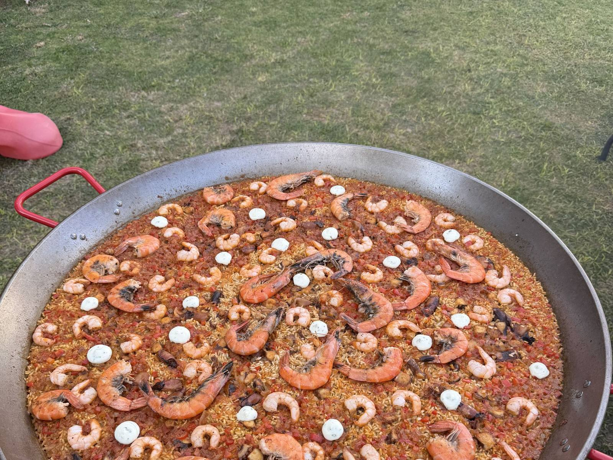
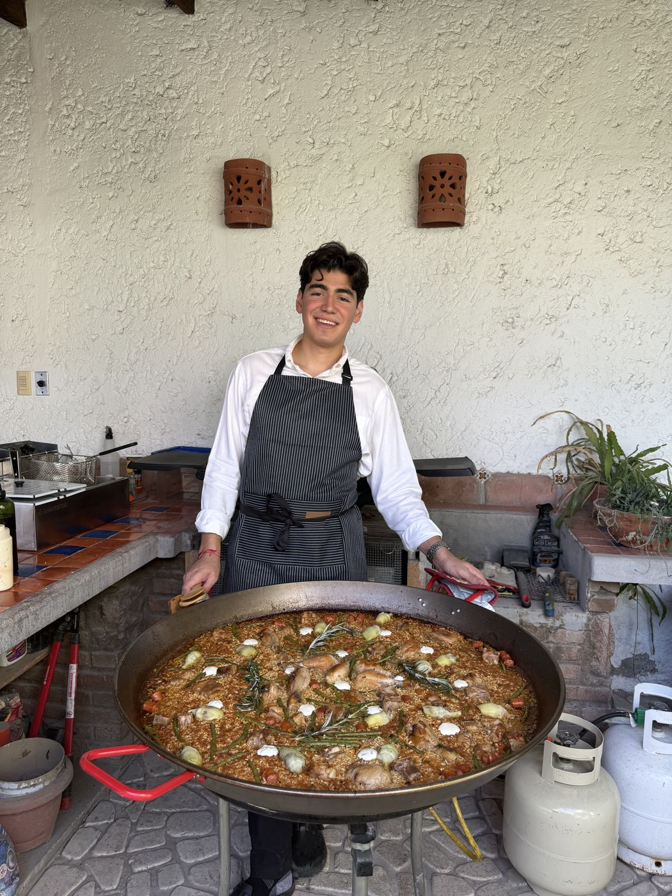

16 milseguidores en Instagram
Españaexperiencia en 2 restaurantes de cocina española
En vivococinamos frente a tus invitados
Invitados
Han disfrutado nuestra cocina



Paellas, arroces, tapas y cortes preparados frente a tus invitados. Tú disfrutas; nosotros cocinamos.
Llegamos con todo lo de la cocina: ingredientes, paelleras, fuego y equipo. Cocinamos en vivo y servimos cada tiempo recién hecho.
Elige tus entradas, el plato fuerte y el postre. Tu carta se arma mientras eliges y al final ves el total.
Nos mandas tu cotización por WhatsApp, confirmamos los detalles y la fecha queda reservada con un anticipo.
El día del evento cocinamos en tu casa, frente a tus invitados, y servimos cada platillo recién hecho.



Viví en Sevilla y recorrí gran parte de España. Allá trabajé en dos restaurantes de cocina española y cociné en eventos privados.
Hoy traigo esa cocina a Torreón: preparo con anticipación lo que lleva tiempo, y el arroz, los cortes y las tapas los termino en vivo en tu casa, para que lleguen a la mesa en su punto.
Cotiza tu eventoToca una región del mapa para conocer los platillos de nuestra carta que nacieron ahí.
Arma tu cotización en la página y mándanosla por WhatsApp. Te confirmamos disponibilidad y la fecha queda reservada al recibir el anticipo del 50%. Sin anticipo, la fecha sigue disponible para otros clientes.
El saldo se liquida el día del evento, antes de comenzar a servir.
Un espacio ventilado para cocinar (de preferencia exterior: jardín, terraza o asador), acceso a agua y una toma de corriente cercana. La loza, las mesas y las sillas corren por tu cuenta.
Sí. Llevamos paelleras, quemadores, gas, utensilios y todos los ingredientes. Tú solo pones el lugar.
El mínimo es de 10 personas. Para grupos más pequeños escríbenos y vemos opciones.
Puedes reservar desde la página con al menos 3 días de anticipación. Si tu evento es antes, escríbenos por WhatsApp y vemos si es posible.
Sí, hasta 5 días antes del evento, cuando se confirman el número final y el menú. Se cobra el número confirmado aunque asistan menos personas. Los aumentos de último momento quedan sujetos a disponibilidad de insumos.
Con 7 días o más de anticipación, tu anticipo se puede aplicar a una nueva fecha dentro de los siguientes 3 meses. Con menos de 7 días el anticipo no es reembolsable, porque cubre la compra de insumos.
Sí, en todo México, para eventos de 25 invitados o más. El traslado se cotiza aparte según la ciudad; arma tu cotización y te lo confirmamos por WhatsApp.
Sí. Avísanos al confirmar el menú y adaptamos lo necesario.
Hasta 4 horas desde nuestra llegada. El tiempo adicional tiene un costo extra.
Las bebidas no están incluidas. Los meseros los podemos coordinar con costo adicional.
Sí. Si la requieres, se agrega el IVA correspondiente.